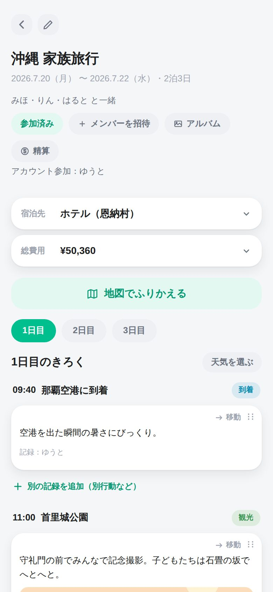
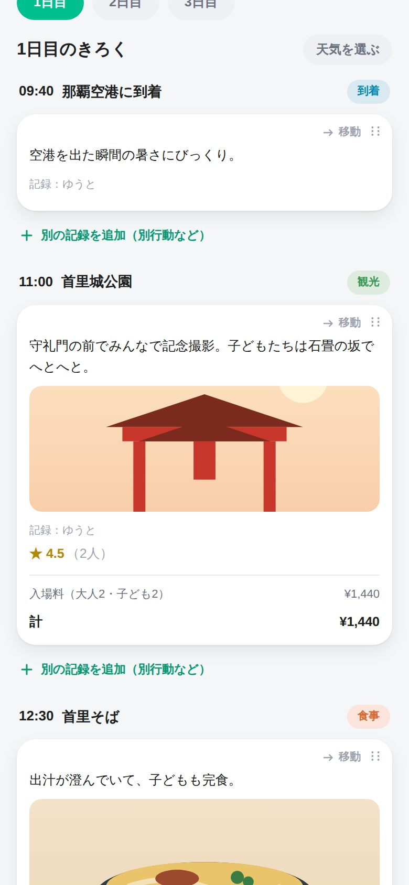
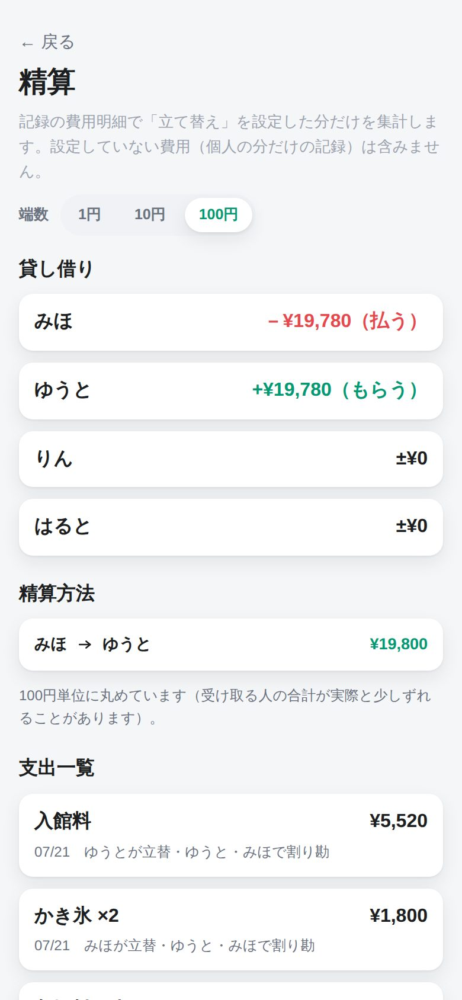
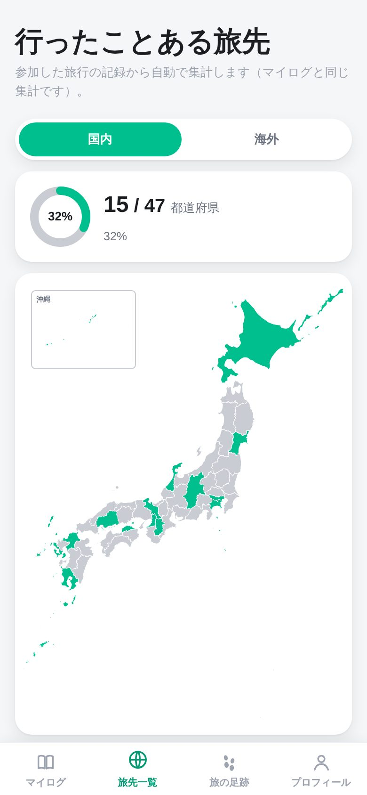
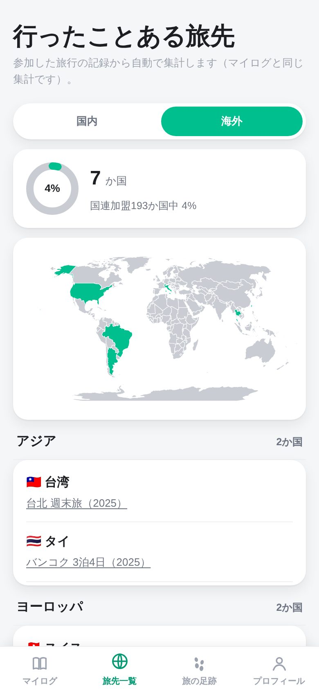

あの旅のきろくを、
一緒に行った人と
書き足していく。
いつ・どこで・何を食べて・いくら使ったか。写真も動画も費用も、旅の1日を時間ごとに残せます。リンクを送るだけで、同行者みんなで見たり書き足したりできます。

見る・書き足すのにログインは要りません。家族のLINEに貼るだけで始められます。
旅のルートが地図の上で動き出して、写真と一緒にもう一度旅をなぞれます。
だれが立て替えたかを入れておけば、帰ってから精算方法まで出してくれます。
旅の「あれ、どこだっけ？」を
ぜんぶ残しておける
旅行中のメモから、帰ってからのふりかえり・精算まで。
1日の流れを、
時間ごとに残す
「11:00 首里城公園」「12:30 首里そば」のように、予定ごとに写真・ひとこと・費用・★評価をまとめて残せます。
- 写真と動画をそのまま添付
- 費用は明細ごとに入れて自動で合計
- 別行動した時間は、記録を分けて並べられる
- 宿泊先・総費用は旅の上にまとめて表示

旅の足跡が、
地図の上を走り出す
記録した場所をつないで、移動手段ごとのアイコンが地図の上を進みます。電車は線路に沿って、飛行機は空を越えて。着いた場所では、その時の写真が出てきます。
- 海外の時差をまたぐ旅も、現地時間のまま
- 縦長の動画にして、SNSにそのままシェア
スクショ・声・メモから、
予定をまとめて作る
航空券やホテル予約のスクショ、旅のあとに話した声、メモ帳の箇条書き。AIが日付・時刻・場所ごとの予定に分けて、確認画面に並べます。直してから追加するだけ。
- 航空券・ホテル・きっぷ・乗換案内のスクショに対応
- 話していない・書いていないことは推測で埋めない
- レシートを撮れば、費用の明細に
「だれがいくら払う？」を
旅のあとに悩まない
費用ごとに「払った人」と「割る人」を選んでおくだけ。送金の回数がいちばん少なくなる精算方法を出します。
- 端数は1円・10円・100円単位で丸められる
- 外貨の支払いも、その日のレートで円に換算
- 立て替えた分だけを集計（個人の記録は混ざらない）

行った都道府県・国が、
地図に塗られていく
参加した旅行の記録から、行ったことのある都道府県と国を自動で集計。★をつけたごはん・宿・アクティビティは、旅をまたいで「飯ログ」「ほてログ」として見返せます。
- 乗り継ぎで立ち寄っただけの国は数えない
- 違う場所は「外す」でいつでも直せる
- 評価は自分だけに見える記録


ほかにも、旅にうれしい機能
海外の予定は、地図の場所から現地の時刻で並びます。時差の境目には区切りが入ります。
「午後だけ美術館へ」のような、ひとりだけ違う道も、その人の道として切り替えて見られます。
同じお店でも、同行者それぞれが★をつけられます。旅行としては平均点で表示。
「1〜2泊目はこの宿、3泊目は同上」のように、泊まった宿を夜ごとに整理できます。
旅行中に撮った写真・動画を、日付順のアルバムでまとめて見返せます。
評価やマイログを使うときだけログイン。見る・書き足すだけならアカウントは要りません。
基本無料で、ずっと使える
旅行の記録・共有・地図でふりかえる・精算は、回数の制限なく無料です。AIを使う取り込みだけ、毎月の回数があります。
よくある質問
一緒に行った人も、アプリを入れる必要がありますか？
いいえ。旅行のリンクを送れば、アプリが無くてもブラウザでそのまま見たり書き足したりできます。ログインも要りません。
写真や記録は、知らない人に見られませんか？
旅行の記録は、その旅行のリンクを知っている人だけが見られる仕組みです。リンクを知っている人は書き足しもできるので、一緒に行った人どうしで送り合ってください。
アプリのインストールは必要ですか？
いいえ。iPhone・Android・パソコンのどれでも、ブラウザ版（tabinoashiato.pages.dev）ですべての機能が使えます。iPhoneアプリは近日公開予定です。
AIに送ったデータはどうなりますか？
声・メモ・スクショの取り込みとレシートの読み取りは、使う前に確認を出してから送ります。送った内容がAIの学習に使われることはありません。詳しくはプライバシーポリシーをご覧ください。